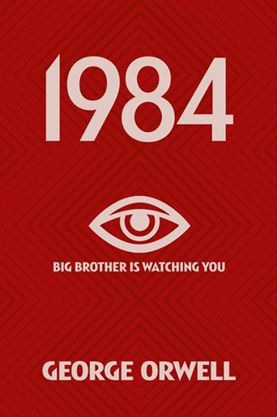

1. 1984 by George Orwell
Winston Smith works for the Ministry of Truth in London, chief city of Airstrip One. Big Brother stares out from every poster, the Thought Police uncover every act of betrayal. When Winston finds love with Julia, he discovers that life does not have to be dull and deadening, and awakens to new possibilities.
My favourite book of all time, still relevant today and I feel this book should be required to read in highschool.
2. Ready Player One by Ernest CLine
In the year 2044, reality is an ugly place. The only time teenage Wade Watts really feels alive is when he's jacked into the virtual utopia known as the OASIS. Wade's devoted his life to studying the puzzles hidden within this world's digital confines—puzzles that are based on their creator's obsession with the pop culture of decades past and that promise massive power and fortune to whoever can unlock them. But when Wade stumbles upon the first clue, he finds himself beset by players willing to kill to take this ultimate prize. The race is on, and if Wade's going to survive, he'll have to win—and confront the real world he's always been so desperate to escape.
Another favourite this book is all about nostalgia and an homage to a gone era

3. Brave New World by Alduos Huxley
Far in the future, the World Controllers have created the ideal society. Through clever use of genetic engineering, brainwashing and recreational sex and drugs, all its members are happy consumers. Bernard Marx seems alone in feeling discontent. Harbouring an unnatural desire for solitude, and a perverse distaste for the pleasure of compulsory promiscuity, Bernard has an ill-defined longing to break free. A visit to one of the few remaining Savage Reservations, where the old, imperfect life still continues, may be the cure for his distress.… Huxley’s ingenious fantasy of the future sheds a blazing light on the present and is considered to be his most enduring masterpiece.
A great story in the same vein as 1984 but dealing with a different social topic. One of my favourite distopian novels.

4. Fahrenheit 451 by Ray Bradbury
Guy Montag is a fireman. His job is to destroy the most illegal of commodities, the printed book, along with the houses in which they are hidden. Montag never questions the destruction and ruin his actions produce, returning each day to his bland life and wife, Mildred, who spends all day with her television “family.” But when he meets an eccentric young neighbor, Clarisse, who introduces him to a past where people didn’t live in fear and to a present where one sees the world through the ideas in books instead of the mindless chatter of television, Montag begins to question everything he has ever known.
A great book to get into distopians with, very easy to understand story that stills leaves much to the imagination.